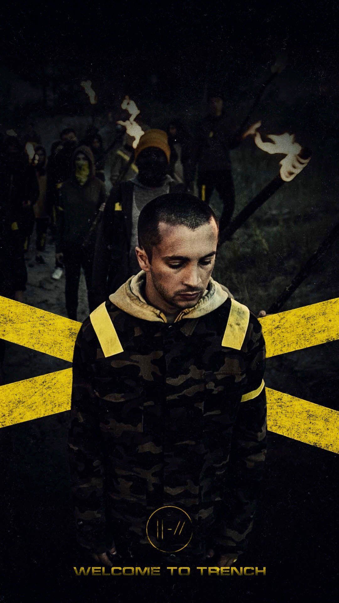
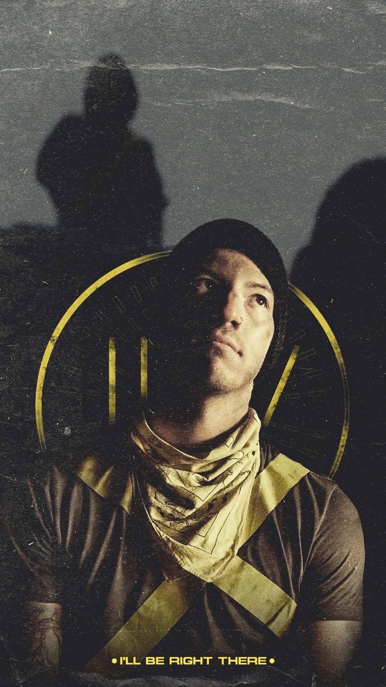

Twenty One Pilots
 Tyler Joseph
Tayler Robert Joseph (Columbus, 1 de dezembro de 1988) é um cantor, compositor, multi-instrumentista, produtor de discos e rapper norte-americano. Tyler é vocalista do duo musical Twenty One Pilots. Vida pregressa Tyler nasceu em Columbus, Ohio, e cresceu com dois irmãos, Zack (também um cantor), Jay, e uma irmã, Madison. Sua mãe, Kelly, era professora de matemática na escola Olentangy Local School District(Condado de Delaware, Ohio) antes de ser nomeado treinador de basquete em 2013 na Olentangy Orange High School (Centro de Lewis, Ohio). Seu pai, Chris, também foi treinador na Worthington Christian High School (Worthington, Ohio) a partir de 1996 até 2005, e é um diretor de uma escola. Tyler jogou basquete desde muito jovem e passou a jogar de armador para a Worthington Christian. Em 2008, a equipe de basquete ficou em segundo lugar no torneio estadual da Divisão IV. Depois de ver um compositor se apresentar em um clube da High Street, ele rejeitou uma oferta de basquete da Universidade Otterbein e começou a tocar música depois de encontrar um teclado velho em seu armário, um presente de Natal de sua mãe, e imitando melodias de rádio. Carreira Twenty One Pilots Twenty One Pilots foi formado em 2009 na cidade de Columbus (Ohio). Inicialmente uma ideia de Tyler, ele eventualmente chamou seus amigos de uma escola secundária Nick Thomas e Chris Salih para formar uma banda. Ele veio com o nome da banda enquanto estudava [Arthur Miller|All My Sons], de Arthur Miller, uma peça sobre um homem que deve decidir o que é melhor para sua família depois de causar a morte de Vinte e um Pilotos durante a Segunda Guerra Mundial, porque ele conscientemente enviou peças defeituosas para o bem de seus negócios. Tyler explicou que esta história de dilema moral foi a inspiração para o nome da banda. Em 29 de Dezembro de 2009, eles fizeram sua estreia, com o álbum Twenty One Pilots e começou uma turnê em Ohio. Seguido por seu segundo álbum, Regional at Best em 2011, que consistia apenas de Tyler e Josh. O terceiro álbum do Twenty One Pilots, Vessel, foi lançado em 8 de janeiro de 2013. O quarto álbum da banda, Blurryface, foi lançado em 17 de maio de 2015, dois dias antes da data de lançamento prevista. Tyler e o baterista Josh Dun embarcaram em duas turnês internacionais em 2015 e 2016: o Blurryface Tour e o Emotional Roadshow World Tour. No 59th Annual Grammy Awards, o duo ganhou o prêmio de Best Pop Duo/Group Performance.
Josh Dun
Joshua William "Josh" Dun (nascido em 18 de junho de 1988) é um músico americano. Ele é o baterista e percussionista do duo musical Twenty One Pilots. Vida pregressa Josh nasceu em Columbus, Ohio, e cresceu com duas irmãs, Ashley e Abigail, e um irmão, Jordan. Crescendo, ele era um baterista autodidata. De acordo com Josh, ele iria de skate até a loja de música local, onde ele iria para comprar discos e imitar as batidas em um kit de bateria eletrônica. Seus pais estabeleceram regras estritas sobre o tipo de música que ele foi autorizado a ouvir, então em vez disso ele pediu às pessoas na loja para recomendar álbuns para ele. "Eu escondia álbuns de bandas como Green Day Dookie sob minha cama," Josh disse. "Às vezes eles os encontravam e ficavam loucos, achavam alguma coisa cristã, como o Relient K, e me faziam escutar isso". Josh trabalhou em Guitar Center por três anos, durante o qual o ex-baterista do Twenty One Pilots Chris Salih era seu colega de trabalho. Carreira House of Heroes Em março de 2010, Josh entrou para a banda House of Heroes depois que o baterista da banda, Colin Rigsby, fez uma pausa para passar mais tempo com sua família. Ele participou da turnê ao vivo da House of Heroes até outubro, quando Rigsby voltou às suas funções. Twenty One Pilots Ver artigo principal: Twenty One Pilots Josh em um show de Twenty One Pilots, em Munique, Alemanha, em 2016. Em 2011, Josh foi convidado pelo ex-baterista do Twenty One Pilots, Chris Salih, para um de seus concertos depois de ouvir o CD demo original da banda. Ele ficou impressionado com o desempenho do trio, e ele se reuniu e fez amizade com o vocalista da banda, Tyler Joseph, depois do show. Mais tarde no ano, Josh deixou seu trabalho no Guitar Center para tocar um show com Tyler depois que Salih e o baixista Nick Thomas deixaram a banda devido a horários ocupados. Eles tocaram uma música antes que os policiais cancelassem o show. Josh, posteriormente, tornou-se o baterista em tempo integral da banda. A dupla lançou o segundo álbum de estúdio da banda, "Regional at Best", em 8 de julho de 2011, e assinou com a gravadora Fueled by Ramen, uma susidiária da Atlantic Records, em abril de 2012. O terceiro álbum da banda Twenty One Pilots, Vessel, foi lançado em 8 de janeiro de 2013. O quarto álbum da banda, Blurryface, foi lançado em 17 de maio de 2015, dois dias antes da data de lançamento prevista.
(informações retiradas de https://www.wikipedia.org/)